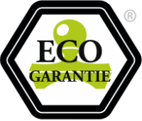

Die Kraft der Natur.
Reinigungsprodukte die das Leben und das Wasser achten!
Hochwertige Produkte.
Saubere Zukunft.
Der Profi - Unterhaltsreiniger. Das Konzentrat für Scheuersaugmaschinen.
Ausschließlich hochwertige, pflanzliche und mineralische Rohstoffe, zu 100 % biologisch abbaubar (OECD - Kriterien) ermöglichen neue Maßstäbe bei Sicherheit und Qualität.
Eine Rezeptur aus rein pflanzlichen und mineralischen Tensiden, sowie rein ätherischen Ölen (überwiegend aus kontrolliert biologischem Anbau und Wildsammlung), ergeben ein mildes und hautschonendes Reinigungsmittel mit ausgezeichneter Reinigungskraft.
Die positiven Eigenschaften der ätherischen Öle (antiseptisch, beruhigend, belebend...), werden auch in der Humanmedizin und im Wellnessbereich geschätzt.
Unsere Überzeugung
Aus Überzeugung verzichten wir auf:
- petrochemische Rohstoffe
- petrochemische oder teilpetrochemische Tenside
- synthetische Duftstoffe, Farbstoffe und Konservierungsstoffe
- gentechnisch erzeugte Rohstoffe
- Enzyme
- Allergie - fördernde Inhaltsstoffe
- Phosphate
Ecogarantie®
vitavol® Profi - Unterhaltsreiniger entspricht den strengen Kriterien der Ecogarantie® 
Ecogarantie® ist eine internationale Marke für ökologische Produkte. Wenn Sie sich für Artikel mit dem Ecogarantie-Siegel entscheiden, entscheiden Sie sich für Qualität und Nachhaltigkeit. Ecogarantie hat Richtlinien ausgearbeitet für Kosmetik, Körperpflegeprodukte, Wasch- und Reinigungsmittel sowie Salz. Konsumenten können darauf vertrauen, dass Produkte, die das Ecogarantie®-Siegel tragen, strenge Bedingungen erfüllen mit dem Ziel, Qualität, Sicherheit und Nachhaltigkeit für die kommenden Generationen sicherzustellen.
Unser System
Das vitavol® - Konzentrat - System:
- entlastet die Umwelt
- schützt sensible Ressourcen
- verringert Transportverkehr und Lagerraum
- erleichtert die Handhabung
- antiviral, antibakteriell und antiseptisch
- ermöglicht optimales Preis - Leistungsverhältnis
unsere Anforderungen
Die hohen technischen Anforderungen an die morderne Reinigung vereint in einem Produkt:
- ausgezeichnete Reinigungseigenschaften
- extrem ergiebig
- vielseitige und einfache Anwendung
- mild und hautschonend
- wasserhärteunempfindlich
- rein pflanzliche und mineralische Inhhaltsstoffe
- 100% biologisch abbaubar (OECD - Kriterien)
Kontakt
Für Rückfragen stehen wir Ihnen jederzeit gerne zur Verfügung,
wenden Sie sich dazu per Telefon, Fax oder E-Mail an uns.
© vitavol® Vertrieb & Service GmbH 2020 | Impressum | Datenschutz